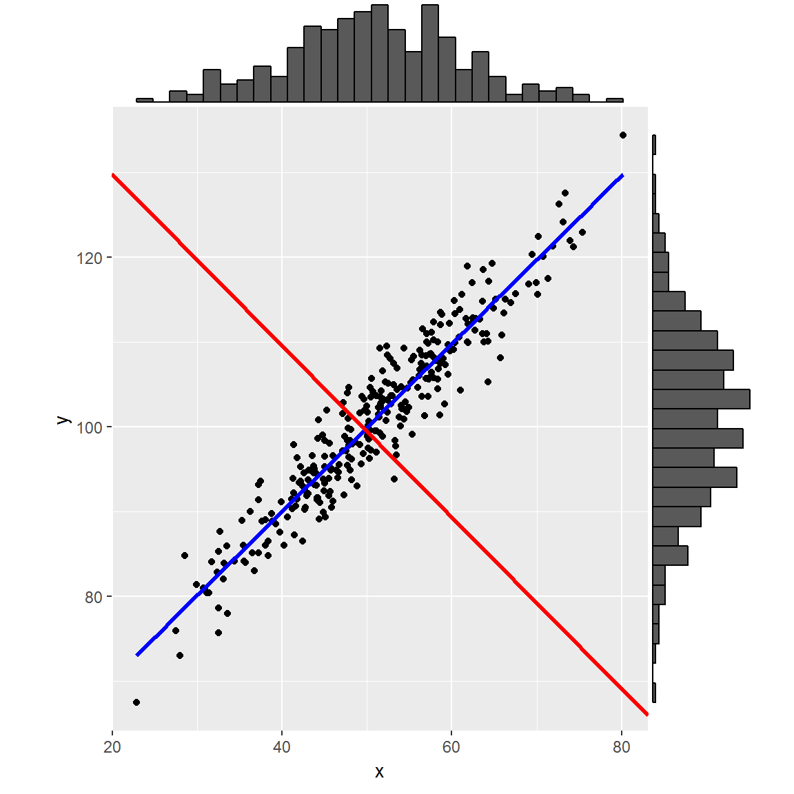
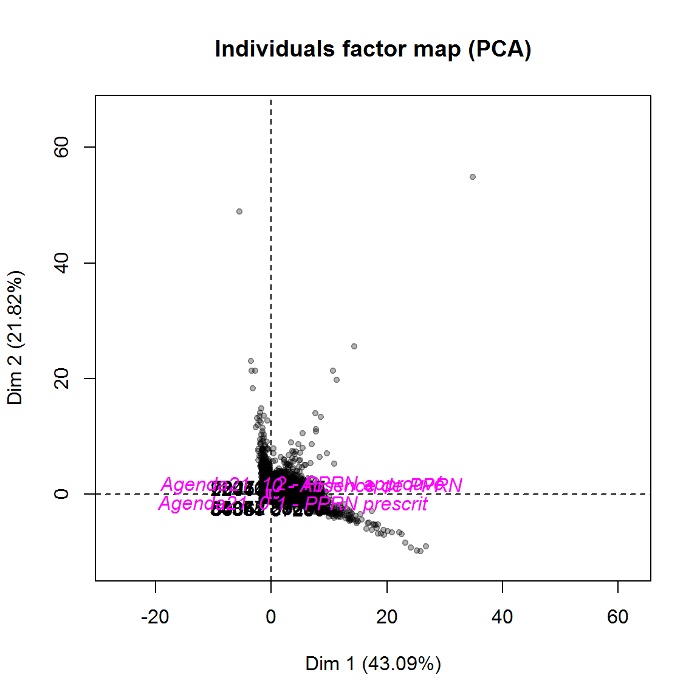

Chapitre 3 L’analyse en composantes principales
3.1 Principe de l’ACP
On dispose d’un tableau de \(n\) lignes et \(p\) colonnes actives qui sont uniquement des variables quantitatives (au sens large, des binaires codées 0/1 ou des variables ordinales passent).

Une ACP peut permettre de :
- Résumer l’information.
- Identifier les corrélations entre variables actives.
- Identifier les proximités entre les individus.
L’ACP va déterminer, dans un espace à \(p\) dimensions (sous l’hypothèse qu’aucune des variables n’est une combinaison linéaire des autres), l’axe le long duquel les points représentant les individus sont les plus “étalés”. Cet axe \(F_1\) est une combinaison linéaire des variables de départ.
Dans l’exemple graphique ci-dessous et en 2D, la dispersion des points est essentiellement le long de l’axe bleu. L’axe rouge est orthogonal au bleu. Dans le repère \((O, x, y)\), la variance est à peu près équivalente sur \(x\) et sur \(y\). A l’inverse, dane le repère constitué des axes de couleur, la variance est portée essentiellement sur le bleu tandis que le rouge ne porte qu’une faible partie de l’inertie du nuage de point. En gros, l’axe bleu est la première composante principale, généralement notée \(PC_1\) ou \(F_1\), et le rouge \(PC_2\) ou \(F_2\).
library (ggExtra)
x <- rnorm (300, 50, 10)
y <- x + rnorm (300, 50, 3)
mod <- lm (y ~ x)
df <- data.frame(x,y)
p <- ggplot(df, aes(x, y)) +
geom_point() +
geom_smooth (method = 'lm', formula = y ~ x, se = FALSE, lwd = 1.2, col = 'blue') +
geom_abline (slope = -1 / mod$coefficients[2], intercept = 150, col = 'red', lwd = 1.2) +
coord_fixed (ratio = 1)
ggExtra::ggMarginal(p, type = "histogram")
Ce changement de repère peut être visualisé ainsi :
df <- data.frame (F1 = mod$fitted, F2 = mod$residuals)
p <- ggplot (data = df, aes (x = F1, y = F2)) +
geom_point () +
geom_hline (yintercept = 0, col = 'blue', lwd = 1.2) +
geom_vline (xintercept = mean (mod$fitted, na.rm = T), col = 'red', lwd = 1.2) +
coord_fixed (ratio = 1)
ggExtra::ggMarginal (p, type = "histogram")
Dans ce nouveau repère, l’essentiel de la dispersion des points peut être “résumé” par leur position sur \(F_1\).
Pour un nombre de variables \(p>2\), on généralise. \(F_1\) est l’axe qui porte le plus d’inertie, puis \(F_2\) est, dans le sous-espace orthogonal à \(F_1\), celui qui porte le plus d’inertie, et ainsi de suite. Le nombre total d’axes est \(p\) (sauf à avoir des variables qui sont des combinaisons linéaires les unes des autres, ce qui intervient par exemple quand la somme des colonnes fait 100%).
Faire une ACP revient donc à effectuer un changement de repère. Dans notre dataframe de départ, chaque colonne peut être vue comme une coordonnée de chacun des individus. Ce n’est pas un repère orthonormé car les variables sont plus ou moins corrélées les unes aux autres. Quand on représente le nuage de points dans le repère \((O, F_1, F_2)\), les axes sont indépendants (corrélation nulle).
En d’autres termes, l’ACP consiste à construire un nouvel espace vectoriel orthonormé (les variables construites sont non-corrélées 2 à 2) de même dimension que l’espace de départ, mais où l’inertie sera concentrée sur les premiers axes factoriels. Mathématiquement, cela conduit à diagonaliser la matrice de variance-covariance ; les valeurs propres correspondent à la part de l’inertie totale portée par chaque axe factoriel.
3.2 variables centrées - réduites ?
Si l’on a des variables de dispersion (variance) très différentes, ou d’unités différentes, en général il fait centrer (retrancher la moyenne) et réduire (diviser par l’écart-type) chacune des variables avant d’effectuer l’ACP. Dans ce cas chacune des variables a la même importance (variance de 1) \(\Rightarrow\) l’inertie du nuage vaut \(p\).
C’est l’option par défaut dans la fonction PCA de FactoMineR (scale.unit = TRUE), qui réalise donc une ACP dite “normée”.
Note : Les espaces des variables et des individus ne sont pas les mêmes en ACP \(\Rightarrow\) on ne peut pas les représenter simultanément. Dans les autres analyses, on le peut.
3.3 Tuto et sources
3.4 Exemple
3.4.1 Données utilisées
- Données communales téléchargées sur Géoïdd et converties en format .csv (attention aux valeurs N/A ou autres dans le fichier Excel qui peuvent parasiter l’importation de données).
- Les individus statistiques sont les communes (lignes) et les variables (colonnes) différents indicateurs décrivant ces communes.
- Objectif : voir quels indicateurs différencient le plus les communes, et quelles sont les communes qui s’écartent le plus de la moyenne.
- Utilisation de variables qualitatives supplémentaires pour compléter la description (présence d’un agenda21 et d’un PPRN).
3.5 Importation et exploration rapide
geoidd <- read.csv2 (file = "Exercices/ACP.csv", header = T, encoding = "latin1")
dat <- geoidd %>% select (-code, -communes)
row.names (dat) <- geoidd$code
dat <- mutate (dat, agd21 = as.factor (paste ("Agenda21 ", (dat$part_agenda21 > 0) + 0))) %>%
select (-part_agenda21) %>%
na.omit()Matrice de corrélations sur les variables quantitatives :
dat %>% select (-PPRN, -agd21) %>% cor() %>% round (digits = 2)## Densite tx_emploi part_artif part_proprio ind_vieill
## Densite 1.00 0.09 0.68 -0.35 -0.06
## tx_emploi 0.09 1.00 0.25 -0.34 0.07
## part_artif 0.68 0.25 1.00 -0.48 -0.10
## part_proprio -0.35 -0.34 -0.48 1.00 0.03
## ind_vieill -0.06 0.07 -0.10 0.03 1.00Tableau croisé sur les variables qualitataives :
table (dat$agd21, dat$PPRN)##
## 0 - Absence de PPRN 1 - PPRN prescrit 2 - PPRN approuvé
## Agenda21 0 21768 2321 8306
## Agenda21 1 2916 136 1063
## Agenda21 NA 0 0 0Le fait d’affecter les code géographiques comme row.names du dataframe permet de mieux identifier les individus sur les graphiques (et les sorties) par la suite.
On remarque dans un premier temps que les corrélations ne sont pas très élevées entre les variables. La corrélation la plus élevée est celle entre la densité de population et la part de terres artificialisées. Le lien entre les variables PPRN et Agenda21 est peu évident avec le tableau de fréquences.
On peut utiliser les fonctions vues dans le module 3 pour explorer les données :
select (dat, -PPRN, -agd21) %>% ggpairs()
3.6 Etape 0 : réaliser l’ACP
Pour voir l’aide : ?PCA. On voit que par défaut les variables sont centrées - réduites et que les valeurs manquantes sont remplacées par la moyenne de la colonne à laquelle elles appartiennent. Il est important de se questionner sur la pertinence de ces options “par défaut”.
Réalisation de l’ACP :
acp <- PCA (X = dat, quali.sup = c (5,7), graph = FALSE)
names (acp)## [1] "eig" "var" "ind" "svd" "quali.sup" "call"La fonction PCA donne pour résultat un objet de type liste (de liste), qui contient toutes les informations nécessaires à l’interprétation des résultats et leur utilisation : on y retrouve notamment, pour les individus et pour les variables, sur chacun des axes :
- Les coordonnées factorielles (coord).
- La qualité de représentation (cos2) sur chaque axe.
- La contribution à la formation de l’axe (c’est à dire la part de variance de l’axe portée par l’individu / la variable).
Pour tout visualiser d’un coup, on peut utiliser la fonction str :
str (acp)L’élément eig donne les valeurs propres de la matrice de variance-covariance, autrement dit la part d’inertie portée par chacun des axes factoriels. Pour accéder aux coordonnées factorielles des individus, on apppelle l’élément coord de l’élément ind de l’objet acp.
head (acp$ind$coord, n = 10) %>% round (digits = 2) %>% datatable ()Contributions des individus à chacun des axes :
head (acp$var$contrib, n = 10) %>% round (digits = 2) %>% datatable ()On peut également utiliser les fonctions génériques summary et plot pour aborder ce nouvel objet.
plot (acp)
3.7 Etape 1 : le nombre d’axes à retenir
On représente graphiquement l’éboulis des valeurs propres.
eig <- as.data.frame (acp$eig)
mm <- mean (eig$`percentage of variance`)
ggplot (eig, aes (x = 1:nrow(eig), weight = `percentage of variance`)) +
geom_bar (fill = "lightblue") +
coord_flip () +
ggtitle ("Histogramme des valeurs propres") +
theme (axis.title.x = element_blank(), axis.title.y = element_blank()) +
geom_hline (yintercept = mm)
Pour choisir le nombre d’axes à conserver, on peut utiliser plusieurs critères :
- Critère de l’inertie moyenne : on retient les axes qui représentent plus d’inertie que la moyenne (=inertie totale/nombre de variables). Cette inertie vaut 1 dans le cas de l’ACP normée (soit 20% dans notre cas). Cela revient à se dire qu’on ne prend que les nouvelles variables qui portent plus d’inertie que les variables initiales.
- Critère du coude : on retient les premiers axes jusqu’à oberver un “décrochage” dans l’éboulis des valeurs propres. On peut l’objectiver par le calcul des différences secondes entre valeurs propres. Cela revient à écarter toutes les nouvelles variables qui n’apportent pas d’inertie supplémentaire de façon significative.
acp$eig## eigenvalue percentage of variance cumulative percentage of variance
## comp 1 2.1546177 43.092354 43.09235
## comp 2 1.0908956 21.817913 64.91027
## comp 3 0.8865747 17.731493 82.64176
## comp 4 0.5718572 11.437144 94.07890
## comp 5 0.2960548 5.921095 100.00000acp$eig %>% diff() %>% diff()## eigenvalue percentage of variance
## comp 3 0.85940109 17.1880217
## comp 4 -0.11039646 -2.2079291
## comp 5 0.03891498 0.7782996
## cumulative percentage of variance
## comp 3 -4.086420
## comp 4 -6.294349
## comp 5 -5.516049Ici, le critère de l’inertie moyenne incite à retenir les 2 premiers axes alors que le critère du coude en retiendrait 3 (la dérivée seconde change de signe entre la 3e et 4e valeur propre). Généralement, on prend le critère le plus parcimonieux pour s’épargner du travail ensuite !
3.8 Etape 2 : interpréter les axes
- Rappel : les axes factoriels sont des combinaisons linéaires des variables initiales. On regarde donc l’importance de ces variables initiales dans les différents axes pour leur donner du sens.
- On doit regarder trois grandeurs pour interpréter (dans cet ordre) :
- Contribution,
- Qualité de représentation,
- Coordonnée.
On visualise tout cela sur le cercle des corrélations. En ACP, qualité et contribution dépendent directement de la coordonnée : il suffit que celle-ci soit élevée pour que la qualité de représentation soit bonne et la contribution forte. Pour obtenir ce graphique, on utilise la fonction plot.PCA
plot.PCA (acp, choix = "var", col.var = "blue")
\(\Rightarrow\) on regarde avant tout les variables proches du cercle unité.
A partir de ce cercle (sur le premier plan factoriel), on voit que :
- Les variables artificialisation et part de propriétaires sont anti-corrélées
- l’indice de vieillissement et la densité sont décorrélés.
- L’axe 1 contient 43,1% de l’inertie totale. Il est principalement formé par les variables densité, artificialisation et part de propriétaires
- L’axe 2 représente 21,8% de l’inertie. Il est formé par les variables indice de vieillissement et taux d’emploi
On peut interpréter de façon plus fine grâce aux chiffres donnés par la fonction summary
summary(acp)##
## Call:
## PCA(X = dat, quali.sup = c(5, 7), graph = FALSE)
##
##
## Eigenvalues
## Dim.1 Dim.2 Dim.3 Dim.4 Dim.5
## Variance 2.155 1.091 0.887 0.572 0.296
## % of var. 43.092 21.818 17.731 11.437 5.921
## Cumulative % of var. 43.092 64.910 82.642 94.079 100.000
##
## Individuals (the 10 first)
## Dist Dim.1 ctr cos2 Dim.2 ctr cos2
## 1 | 0.823 | -0.559 0.000 0.462 | -0.603 0.001 0.538
## 2 | 0.915 | -0.795 0.001 0.756 | -0.407 0.000 0.198
## 3 | 3.847 | 3.393 0.015 0.778 | 0.449 0.001 0.014
## 4 | 0.741 | 0.109 0.000 0.021 | -0.476 0.001 0.413
## 5 | 1.222 | 0.080 0.000 0.004 | -0.055 0.000 0.002
## 6 | 0.623 | 0.219 0.000 0.124 | -0.404 0.000 0.420
## 7 | 0.844 | 0.365 0.000 0.187 | -0.529 0.001 0.392
## 8 | 0.851 | -0.750 0.001 0.778 | -0.263 0.000 0.096
## 9 | 0.701 | 0.060 0.000 0.007 | -0.276 0.000 0.154
## 10 | 0.881 | -0.480 0.000 0.296 | -0.613 0.001 0.483
## Dim.3 ctr cos2
## 1 | 0.005 0.000 0.000 |
## 2 | 0.118 0.000 0.017 |
## 3 | -0.984 0.003 0.065 |
## 4 | -0.351 0.000 0.224 |
## 5 | 0.211 0.000 0.030 |
## 6 | -0.254 0.000 0.167 |
## 7 | -0.290 0.000 0.118 |
## 8 | 0.232 0.000 0.074 |
## 9 | -0.490 0.001 0.488 |
## 10 | -0.164 0.000 0.034 |
##
## Variables
## Dim.1 ctr cos2 Dim.2 ctr cos2 Dim.3
## Densite | 0.784 28.554 0.615 | -0.264 6.394 0.070 | 0.392
## tx_emploi | 0.461 9.877 0.213 | 0.616 34.798 0.380 | -0.519
## part_artif | 0.875 35.549 0.766 | -0.149 2.049 0.022 | 0.165
## part_proprio | -0.740 25.447 0.548 | -0.187 3.215 0.035 | 0.192
## ind_vieill | -0.111 0.573 0.012 | 0.764 53.545 0.584 | 0.633
## ctr cos2
## Densite 17.301 0.153 |
## tx_emploi 30.330 0.269 |
## part_artif 3.070 0.027 |
## part_proprio 4.152 0.037 |
## ind_vieill 45.146 0.400 |
##
## Supplementary categories
## Dist Dim.1 cos2 v.test Dim.2 cos2
## 0 - Absence de PPRN | 0.243 | -0.235 0.932 -44.179 | 0.003 0.000
## 1 - PPRN prescrit | 0.399 | 0.365 0.836 12.756 | -0.112 0.078
## 2 - PPRN approuvé | 0.543 | 0.523 0.929 40.018 | 0.020 0.001
## Agenda21 0 | 0.052 | -0.048 0.829 -17.414 | 0.009 0.029
## Agenda21 1 | 0.412 | 0.375 0.829 17.414 | -0.070 0.029
## v.test Dim.3 cos2 v.test
## 0 - Absence de PPRN 0.916 | 0.024 0.009 6.937 |
## 1 - PPRN prescrit -5.482 | -0.021 0.003 -1.145 |
## 2 - PPRN approuvé 2.163 | -0.057 0.011 -6.775 |
## Agenda21 0 4.545 | -0.015 0.083 -8.598 |
## Agenda21 1 -4.545 | 0.119 0.083 8.598 |La fonction dimdesc donne les variables les plus signifiantes sur chacun des axes
dimdesc(acp)## $Dim.1
## $Dim.1$quanti
## correlation p.value
## part_artif 0.8751772 0.000000e+00
## Densite 0.7843627 0.000000e+00
## tx_emploi 0.4613266 0.000000e+00
## ind_vieill -0.1111117 1.236263e-100
## part_proprio -0.7404659 0.000000e+00
##
## $Dim.1$quali
## R2 p.value
## PPRN 0.054080975 0.000000e+00
## agd21 0.008306086 3.445294e-68
##
## $Dim.1$category
## Estimate p.value
## 2 - PPRN approuvé 0.3055307 0.000000e+00
## Agenda21 1 0.2115150 3.445294e-68
## 1 - PPRN prescrit 0.1470988 2.415332e-37
## Agenda21 0 -0.2115150 3.445294e-68
## 0 - Absence de PPRN -0.4526296 0.000000e+00
##
##
## $Dim.2
## $Dim.2$quanti
## correlation p.value
## ind_vieill 0.7642764 0.000000e+00
## tx_emploi 0.6161225 0.000000e+00
## part_artif -0.1494941 1.843625e-181
## part_proprio -0.1872759 2.069053e-285
## Densite -0.2641013 0.000000e+00
##
## $Dim.2$quali
## R2 p.value
## PPRN 0.0008706053 1.245555e-07
## agd21 0.0005657106 5.489230e-06
##
## $Dim.2$category
## Estimate p.value
## Agenda21 0 0.03927776 5.489230e-06
## 2 - PPRN approuvé 0.04945204 3.051304e-02
## Agenda21 1 -0.03927776 5.489230e-06
## 1 - PPRN prescrit -0.08224271 4.171741e-08
##
##
## $Dim.3
## $Dim.3$quanti
## correlation p.value
## ind_vieill 0.6326567 0.000000e+00
## Densite 0.3916457 0.000000e+00
## part_proprio 0.1918639 1.002604e-299
## part_artif 0.1649901 4.054263e-221
## tx_emploi -0.5185559 0.000000e+00
##
## $Dim.3$quali
## R2 p.value
## agd21 0.002025068 7.791424e-18
## PPRN 0.001395099 8.566069e-12
##
## $Dim.3$category
## Estimate p.value
## Agenda21 1 0.06699392 7.791424e-18
## 0 - Absence de PPRN 0.04171611 3.957733e-12
## 2 - PPRN approuvé -0.03877158 1.223326e-11
## Agenda21 0 -0.06699392 7.791424e-18On peut également regarder l projection des individus dans le plan, ce qui n’est pas toujours très informatif (mais qui peut permettre de repérer des groupes d’individus dans les cas favorables)
plot.PCA(acp,choix = "ind",col.ind = "lightblue")
N’oubliez pas de consulter l’aide des fonctions présentées pour plus d’options.
3.9 Savoir utiliser les variables supplémentaires
Dans toutes les analyses factorielles, on distingue les variables actives, qui participent de la création du nouvel espace vectoriel, des variables supplémentaires, que l’on projette a posteriori sur cet espace, mais qui n’interviennent pas dans la construction des variables synthétiques.
- Elles peuvent être qualitatives ou quantitatives.
- Elles sont projetée sur l’espace des variables (variable continue) ou des individus (qualitative).
- Elles ne rentrent pas dans la matrice qui sert à la définition des axes.
- Elles sont utiles pour voir la corrélation d’une variable (une classe d’individus par exemple) avec toutes les variables simultanément
Dans la fonction PCA, on désigne les variables supplémentaires avec les arguments quali.sup ou quanti.sup ; attention, on les désigne par le numéro de colonne de la variable.
\(\Rightarrow\) Pas lien entre le PPRN et les autres variables : elles se projettent au centre du nuage de points. Les communes disposant d’un PPRN ou d’un Agenda21 n’ont donc pas de caractéristiques particulières.
On peut utiliser le paramètre select pour mettre en évidence certains individus ou variables en fonction de leur contribution ou qualité de représentation
plot.PCA(acp,choix="ind",select="contrib 20")
plot.PCA(acp,choix="ind",select="cos2 20")
3.10 Savoir repérer un effet taille
L’effet taille se recontre assez fréquemment quand on réalise une ACP : il se manifeste par :
- Toutes les variables sont du côté droit de l’axe 1 (c’est à dire qu’elles sont toutes corrélées positivement) et celui-ci contient une très grand part de l’inertie.
- Dans ce cas, l’axe 1 constitue un gradient : il permet de classer les individus du plus “petit” au plus “grand”, sur toutes les variables simultanément
taille <- read.csv2("Exercices/Effet_taille.csv",h=T, encoding = "latin1")
t <- PCA(na.omit(taille[,-c(1,2)]),graph = F)
plot.PCA(t,choix=c("var"),col.var="blue")
3.11 Exercice
A partir du dataframe iris inclus dans R :
- Explorer rapidement le jeu de données. Quel est le type des variables ?
- Réalisez une ACP sur ce jeu de données
- Interprétez les résultats obtenus
- Inclure la variable “Species” dans l’analyse en tant que variable qualitative supplémentaire
data("iris")
ggpairs(iris)
acp.iris <- select(iris,-Species) %>% PCA()
summary(acp.iris)
##
## Call:
## PCA(X = .)
##
##
## Eigenvalues
## Dim.1 Dim.2 Dim.3 Dim.4
## Variance 2.918 0.914 0.147 0.021
## % of var. 72.962 22.851 3.669 0.518
## Cumulative % of var. 72.962 95.813 99.482 100.000
##
## Individuals (the 10 first)
## Dist Dim.1 ctr cos2 Dim.2 ctr cos2
## 1 | 2.319 | -2.265 1.172 0.954 | 0.480 0.168 0.043 |
## 2 | 2.202 | -2.081 0.989 0.893 | -0.674 0.331 0.094 |
## 3 | 2.389 | -2.364 1.277 0.979 | -0.342 0.085 0.020 |
## 4 | 2.378 | -2.299 1.208 0.935 | -0.597 0.260 0.063 |
## 5 | 2.476 | -2.390 1.305 0.932 | 0.647 0.305 0.068 |
## 6 | 2.555 | -2.076 0.984 0.660 | 1.489 1.617 0.340 |
## 7 | 2.468 | -2.444 1.364 0.981 | 0.048 0.002 0.000 |
## 8 | 2.246 | -2.233 1.139 0.988 | 0.223 0.036 0.010 |
## 9 | 2.592 | -2.335 1.245 0.812 | -1.115 0.907 0.185 |
## 10 | 2.249 | -2.184 1.090 0.943 | -0.469 0.160 0.043 |
## Dim.3 ctr cos2
## 1 -0.128 0.074 0.003 |
## 2 -0.235 0.250 0.011 |
## 3 0.044 0.009 0.000 |
## 4 0.091 0.038 0.001 |
## 5 0.016 0.001 0.000 |
## 6 0.027 0.003 0.000 |
## 7 0.335 0.511 0.018 |
## 8 -0.089 0.036 0.002 |
## 9 0.145 0.096 0.003 |
## 10 -0.254 0.293 0.013 |
##
## Variables
## Dim.1 ctr cos2 Dim.2 ctr cos2 Dim.3 ctr
## Sepal.Length | 0.890 27.151 0.792 | 0.361 14.244 0.130 | -0.276 51.778
## Sepal.Width | -0.460 7.255 0.212 | 0.883 85.247 0.779 | 0.094 5.972
## Petal.Length | 0.992 33.688 0.983 | 0.023 0.060 0.001 | 0.054 2.020
## Petal.Width | 0.965 31.906 0.931 | 0.064 0.448 0.004 | 0.243 40.230
## cos2
## Sepal.Length 0.076 |
## Sepal.Width 0.009 |
## Petal.Length 0.003 |
## Petal.Width 0.059 |
dimdesc(acp.iris)
## $Dim.1
## $Dim.1$quanti
## correlation p.value
## Petal.Length 0.9915552 3.369916e-133
## Petal.Width 0.9649790 6.609632e-88
## Sepal.Length 0.8901688 2.190813e-52
## Sepal.Width -0.4601427 3.139724e-09
##
##
## $Dim.2
## $Dim.2$quanti
## correlation p.value
## Sepal.Width 0.8827163 2.123801e-50
## Sepal.Length 0.3608299 5.731933e-06
##
##
## $Dim.3
## $Dim.3$quanti
## correlation p.value
## Petal.Width 0.2429827 0.0027349555
## Sepal.Length -0.2756577 0.0006395628
acp.iris <- PCA(iris,quali.sup = 5)